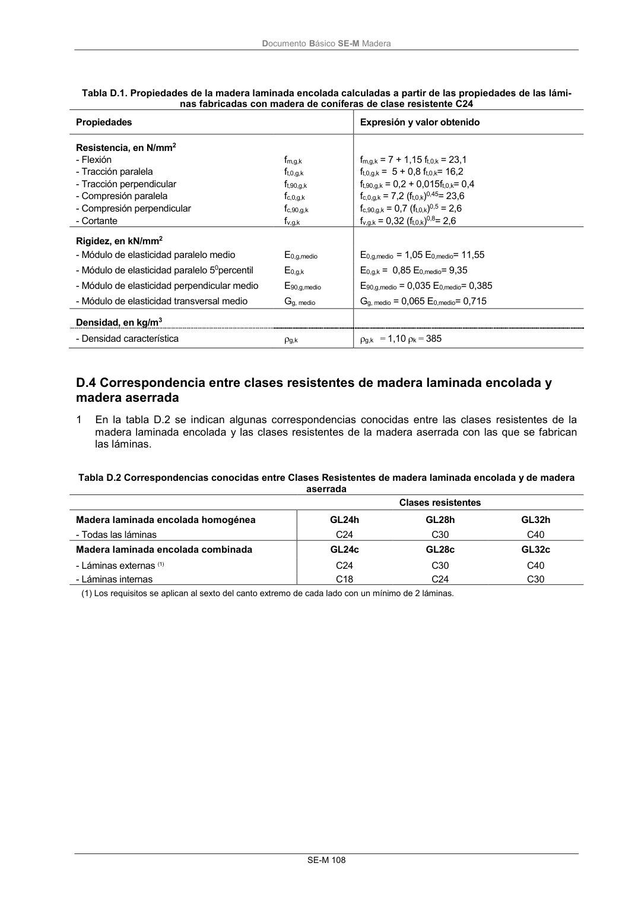

DB-SE-M Madera · edición 2019-12-20 · capa oficial
Documento DB-SE-M-oficial · SHA-256 del PDF 26b5819839ebfda78b0b119c5e76a0a37773b0d763c05688541870075df93718
Copia fiel del PDF fuente · Fuente oficial
Ficha de la disposición en la fuente oficial
Formatos: JSON del segmento · Markdown
D.3 Asignación de clase resistente mediante fórmulas 1 La asignación de clase resistente a la madera laminada encolada se obtiene, en este caso, mediante cálculo aplicando las expresiones matemáticas que figuran en la norma UNE-EN 14080:2013; para lo cual es preciso conocer, previamente, los valores característicos de las propiedades de la madera aserrada a emplear en las láminas, de acuerdo con lo establecido en el anejo E. 2 En madera laminada combinada las expresiones se aplican a las propiedades de las partes indivi- duales de la sección transversal. El análisis de las tensiones puede realizarse basándose en la hipó- tesis de la deformación plana de la sección. La comprobación de la resistencia debe realizarse en todos los puntos relevantes de la sección transversal. 3 Los valores de las propiedades obtenidos mediante las expresiones que figuran en la norma UNE- EN 14080:2013 deben ser superiores o iguales a los correspondientes a la clase resistente a asig- nar. DocumentoBásico SE-M Madera SE-M 108 Tabla D.1. Propiedades de la madera laminada encolada calculadas a partir de las propiedades de las lámi- nas fabricadas con madera de coníferas de clase resistente C24 Propiedades Expresión y valor obtenido Resistencia, en N/mm2 - Flexión fm,g,k fm,g,k = 7 + 1,15 ft,0,k = 23,1 - Tracción paralela ft,0,g,k ft,0,g,k = 5 + 0,8 ft,0,k= 16,2 - Tracción perpendicular ft,90,g,k ft,90,g,k = 0,2 + 0,015ft,0,k= 0,4 - Compresión paralela fc,0,g,k fc,0,g,k = 7,2 (ft,0,k)0,45= 23,6 - Compresión perpendicular fc,90,g,k fc,90,g,k = 0,7 (ft,0,k)0,5 = 2,6 - Cortante fv,g,k fv,g,k = 0,32 (ft,0,k)0,8= 2,6 Rigidez, en kN/mm2 - Módulo de elasticidadparalelo medio E0,g,medio E0,g,medio = 1,05 E0,medio= 11,55 - Módulo de elasticidad paralelo 50percentil E0,g,k E0,g,k = 0,85 E0,medio= 9,35 - Módulo de elasticidad perpendicular medio E90,g,medio E90,g,medio = 0,035 E0,medio= 0,385 - Módulo de elasticidad transversal medio Gg, medio Gg, medio = 0,065 E0,medio= 0,715 Densidad, en kg/m3 - Densidad característica g,k g,k = 1,10k = 385
